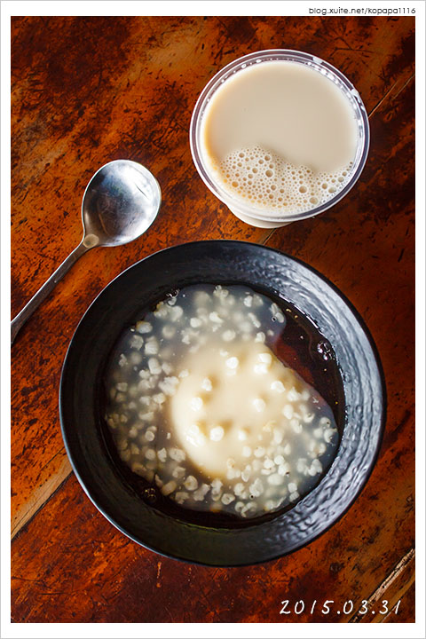
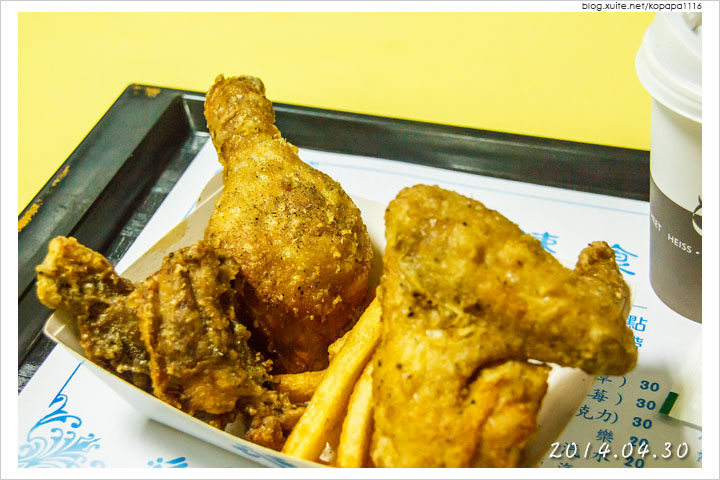
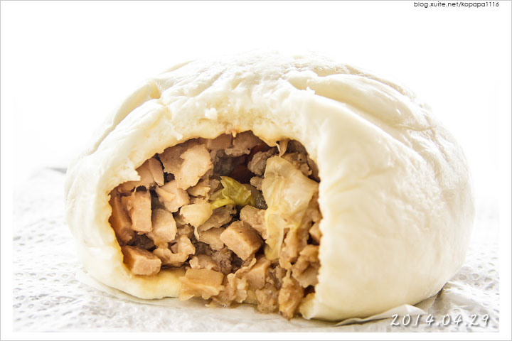
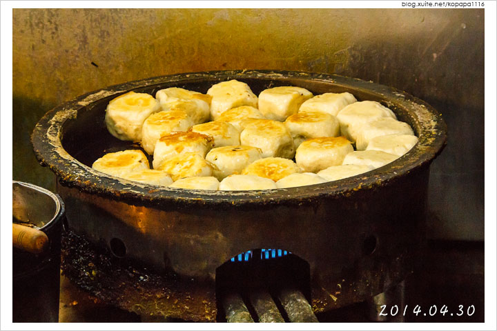
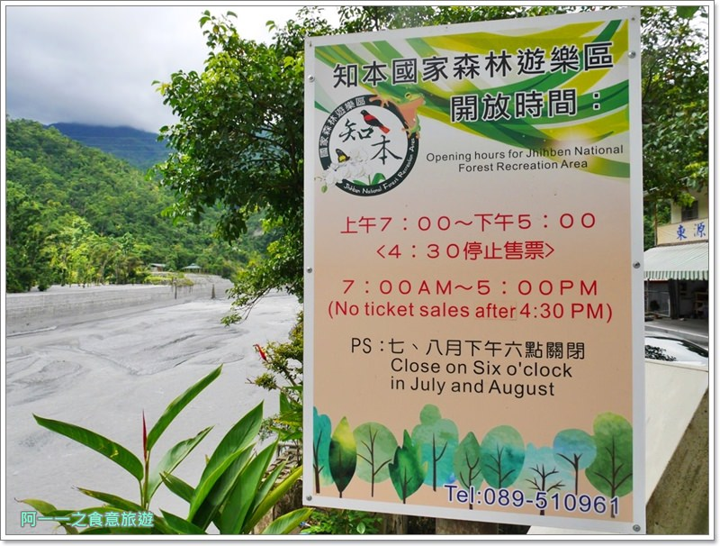
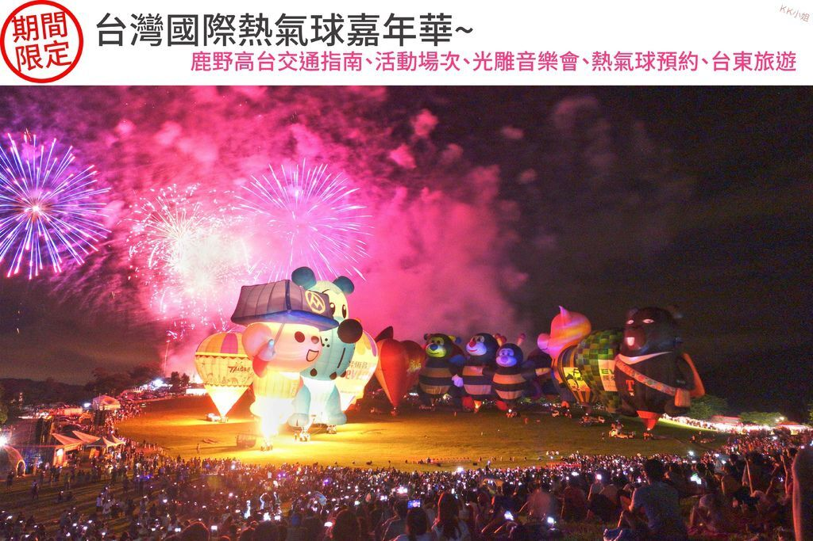
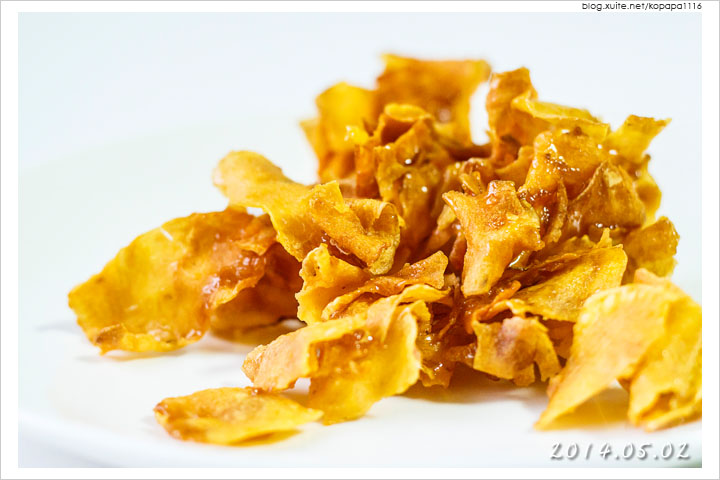
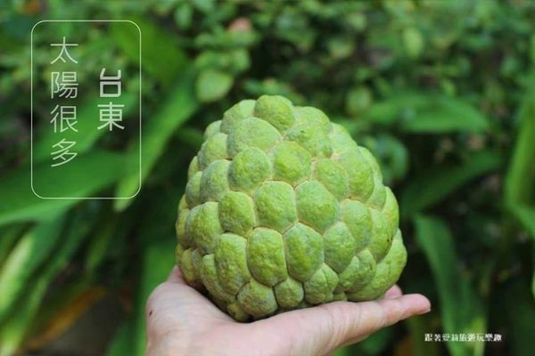
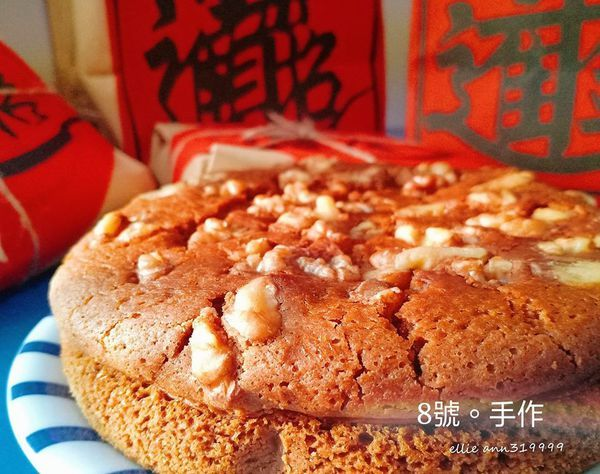

《台東美食》
成功豆花
藍蜻蜓速食專賣店
金花軒卑南包仔店
七里香水煎包滷味
《台東景點》
知本國家森林遊樂區
鹿野高台熱氣球
《台東名產》
楊記家傳地瓜專賣店
太陽很多釋迦
八號。手做
旅遊台東 traveling Taitung Go!
《台東美食》
成功豆花
 綿密豆花搭配濃純豆漿，在滿滿豆香味中已征服小薛的味蕾！
位於台東成功鎮的老字號『成功豆花』，還有刨冰、薏仁、綠豆蒜…
等古早味甜品可以選擇，快來一嚐十幾年老店的懷舊滋味吧！
『成功豆花』店家詳細資訊&食記：
https://yoti.life/taitung-
food-21/
延伸閱讀：
桂花樹下
藍蜻蜓速食專賣店
 『藍蜻蜓速食專賣店』是老台東人專屬的炸雞店，
就算到現在人氣還是一樣旺！更是台東排隊名店之一，
每到假日大同路上都是長長的排隊人潮，
這裡有搭配漢堡的藍蜻蜓全餐和只吃炸雞的炸雞全餐，
讓我們一起來品嚐老台東人懷念的好滋味吧！
『藍蜻蜓速食專賣店』店家詳細資訊&食記：
https://yoti.life/taitung-
food-3/
延伸閱讀：
阿鋐炸雞專賣店
金花軒卑南包仔店(卑南肉包)
 身為包子控一定要來朝聖知名的台東卑南肉包！
也就是每天都大排長龍的『金花軒卑南包仔店』，
其招牌就是筍丁肉包、高麗菜包和芋頭紅豆包…等包子饅頭，
美味到一吃便成了老主顧！
『金花軒卑南包仔店(卑南肉包)』店家詳細資訊&食記：
https://yoti.life/taitung-
food-8/
延伸閱讀：
好朋友肉包店
七里香水煎包滷味
 遠近馳名的『七里香水煎包滷味』就在台東市區的正氣路小巷內，
其招牌水煎包跟小薛拳頭一樣大！煎到金黃酥脆的外皮一口咬下，
裡頭盡是滿滿的餡料！口感相當豐富吃的很有飽足感喔～
『七里香水煎包滷味』店家詳細資訊&食記：
https://yoti.life/taitung-
food-7/
延伸閱讀：
林記阿達滷味麵食館
、
戚家糧倉煙燻滷味
《台東景點》
知本國家森林遊樂區
 沒有太多人工建築物的寧靜森林，投入綠意的懷抱，努力爬著步道，
一旁就是一棵又一棵的參天巨木，
爬累再泡個免費溫暖足湯舒緩一下，不經意的鳥叫聲，
水裡悠游的小蝌蚪，若是幸運還有機會遇到台灣獼猴喔！
『知本國家森林遊樂區』景點詳細資訊&遊記：
https://paulyear.com/zhiben-
forest/
延伸閱讀：
知本溫泉
鹿野高台熱氣球
 熱氣球嘉年華雲集了世界各地熱氣球來台展出，
每場展出的造型球都不太相同，光是台灣熱氣球就佔了11顆～
可愛的福利熊造型球也是台灣熱氣球之一噢!
當造型逗趣的熱氣球齊放自由飛時，吸睛程度百分百！
熱氣球嘉年華繽紛了臺灣的天空！
『鹿野高台熱氣球』景點詳細資訊&遊記：
https://c852841092000.pixnet.
net/blog/post/350564218
延伸閱讀：
三仙台
《台東名產》
楊記家傳地瓜專賣店-振發老店
 相當涮嘴的地瓜酥，可是小薛來台東必買名產伴手禮之一，
這次來買已有五十多年歷史的『楊記家傳地瓜專賣店』，
除了大同路上的振發老店可以買地瓜酥外，
中興路上的中興分店也可以買喔～
『楊記家傳地瓜專賣店-振發老店』店家詳細資訊&食記：
https://yoti.life/taitung-
food-15/
延伸閱讀：
蕃薯伯楊記家傳地瓜酥
太陽很多釋迦
 台東日照長溫度高，果樹充分地進行光合作用，製造澱粉、
糖類等有機物質。一到夜晚，氣溫降低，呼吸作用減弱，
就減少了養分的消耗。果實累積大量的有機物質，養分充足！
這是台東釋迦好吃的秘密之一，每天乖乖曬太陽，
讓台東生產出世界第一的釋迦。
『太陽很多釋迦』店家詳細資訊&食記：
https://ann319999.pixnet.net/
blog/post/349410079
延伸閱讀：
全台橙界之王-肚臍橙
八號。手做 Cheese cake
 乳酪蛋糕又稱起司蛋糕，受到許多人喜愛，有重乳酪與輕乳酪兩種，
是蛋糕店、咖啡館常見的蛋糕種類之一，8號。手作，
採用新鮮食材、堅持以食材的原味，
製作出香濃好吃的日式重乳酪蛋糕。適合喜好濃郁口感的朋友!
『八號。手做 Cheese cake』店家詳細資訊&食記：
https://www.walkerland.com.tw/
article/view/212087
延伸閱讀：
寒單餅